基于接入 UXCam 后的用量、事件、版本、屏幕与漏斗数据整理 · 仅供内部复盘
第二周相对第一周，会话与用户量级明显抬升；堆叠显示短会话占比高、单次访问用户仍是最大桶，增长来自各频次层一起涌入，而非明显加深粘性。
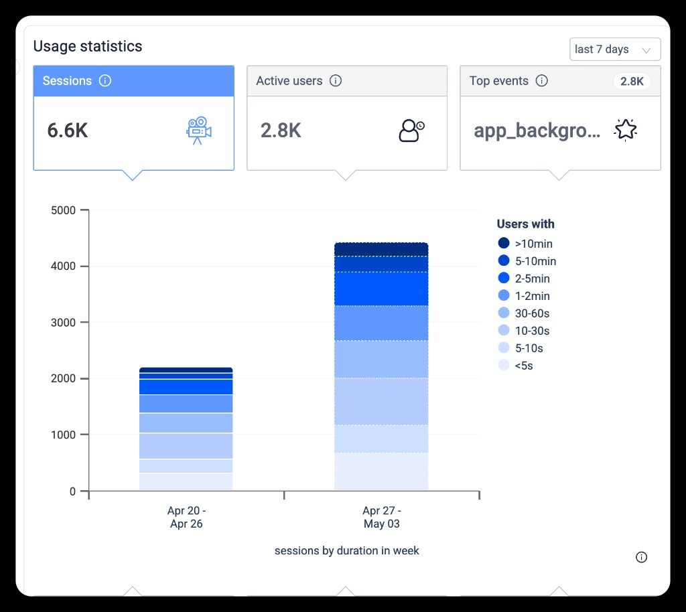
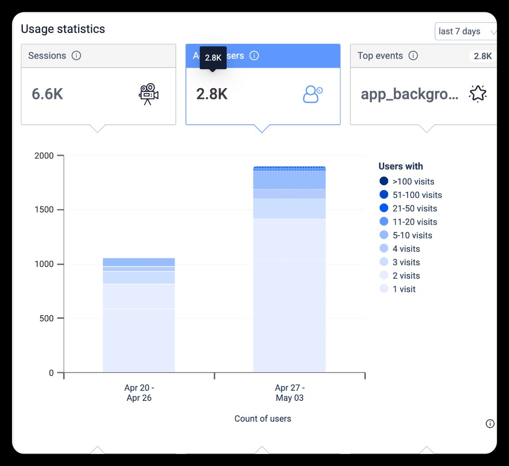
早期区间接近全零、之后陡升，符合近期集成或放量特征。app_backgrounded、rageTap、UI Freeze、lesson_start 等同步爬升，说明挫败与卡顿信号随流量放大。
lesson_complete 极低而 lesson_exit 更高时，优先排查埋点定义与完成条件。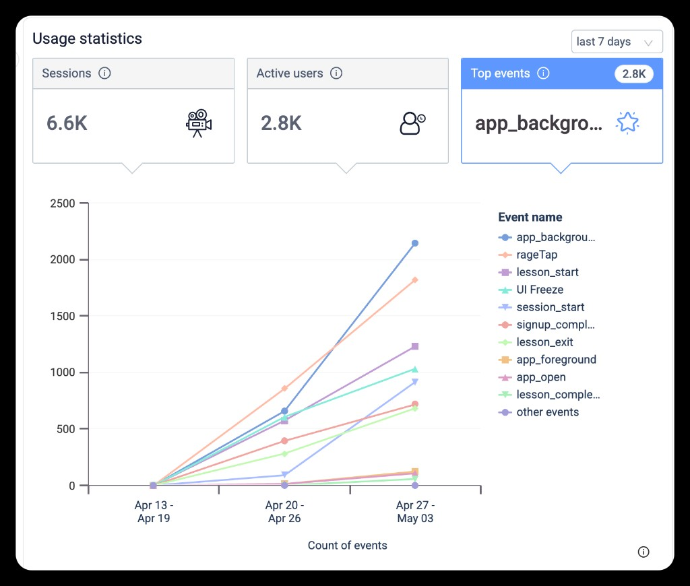
rageTap / UI Freeze 与版本、设备档位、网络类型交叉下钻。2.6.1 仍占绝大多数用户；2.7.0 在部分图表中会话时长与屏数极低，而「rage/session」为 0 时更可能反映样本极少，不能直接等同于体验最优。
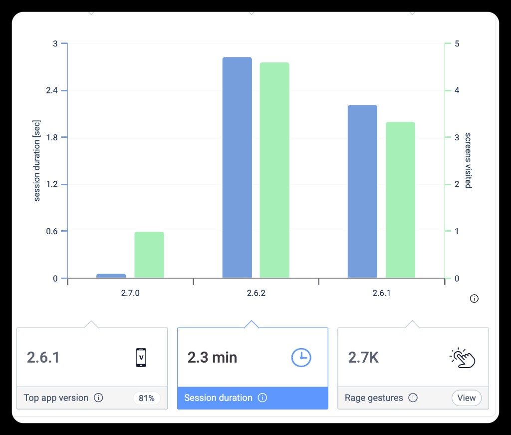
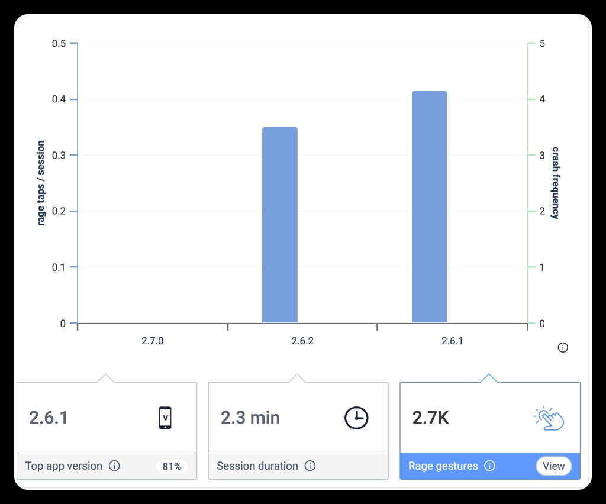
AiClassRoom 相关屏在时长/会话中占比最高（约三分之一量级），与「核心教学场景」一致；周二会话占比突出，需与课表、推送、渠道核对。部分工作日柱形极低，建议排除过滤或采集缺口后再解读。
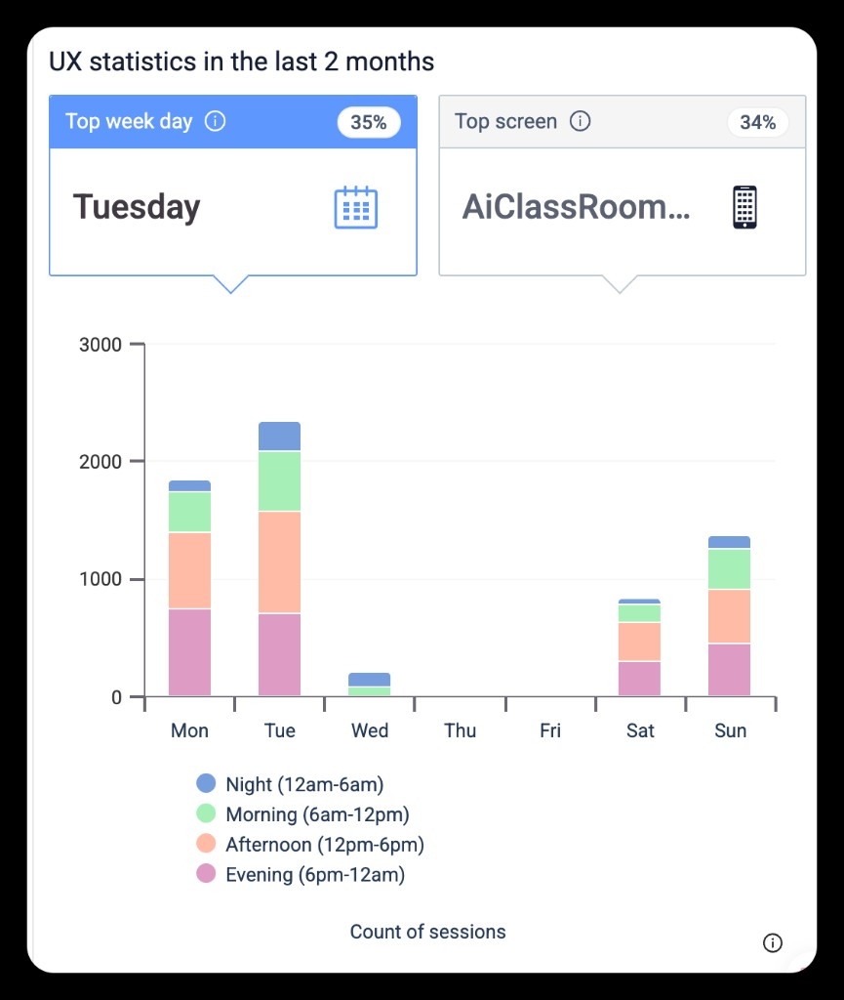
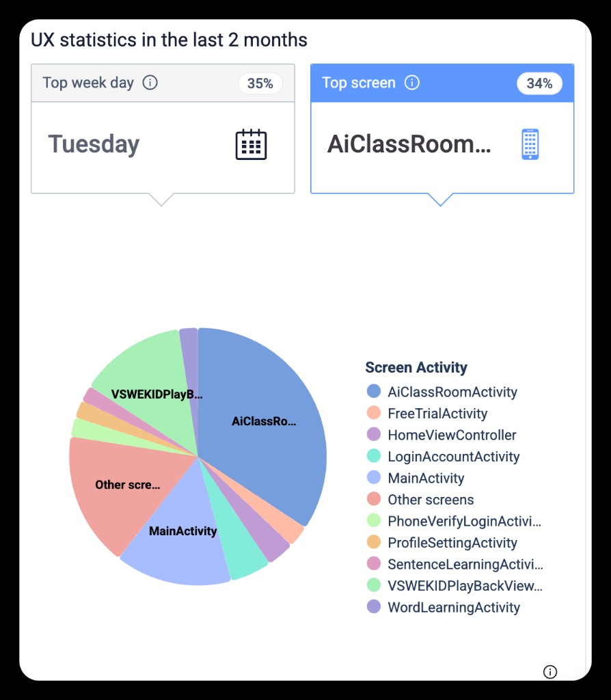
MainActivity 在 UI 冻结上居首；AiClassRoomActivity 在 rage tap 上为断层第一。登录相关屏在两类问题中均靠前，与「账号链路卡顿 + 挫败」叙事一致。
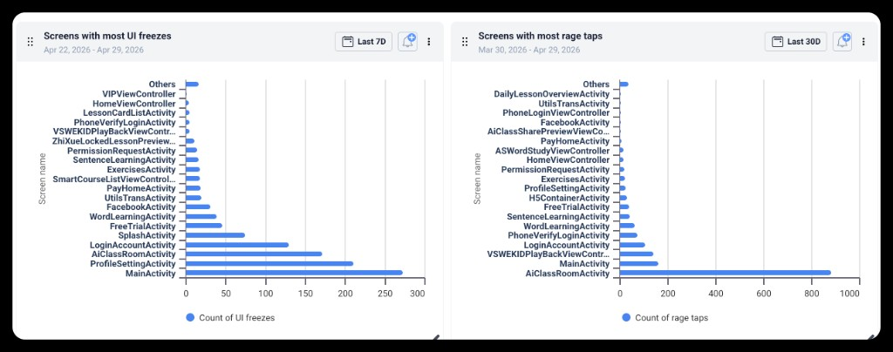
漏斗显示：登录屏 → signup_complete 约半数流失；注册完成 → lesson_start 相对跌幅最大。iOS 在「注册完成 → 开始上课」上整体优于 Android。留存上 <Day1 约一半、Day1 后骤降，且近期 cohort 多带未成熟标记，解读时注意时间窗。
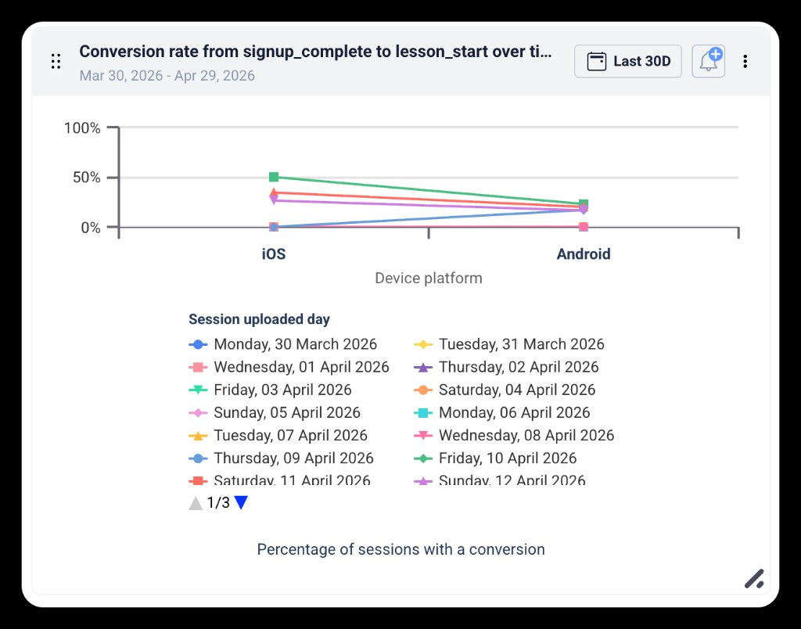
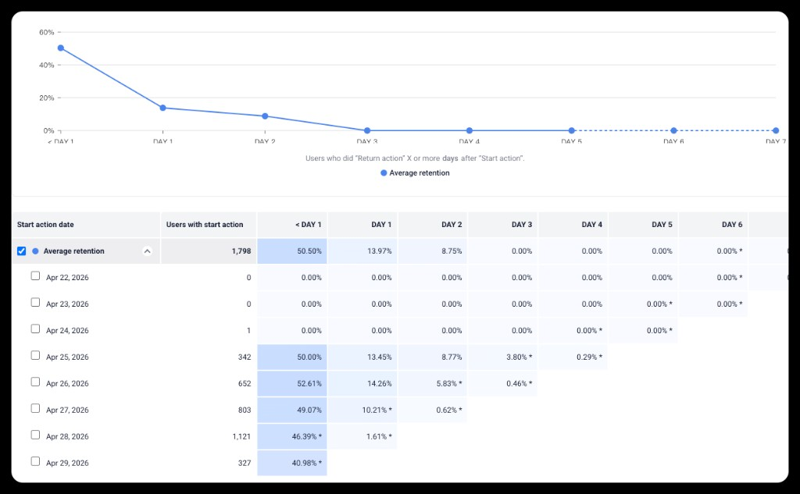
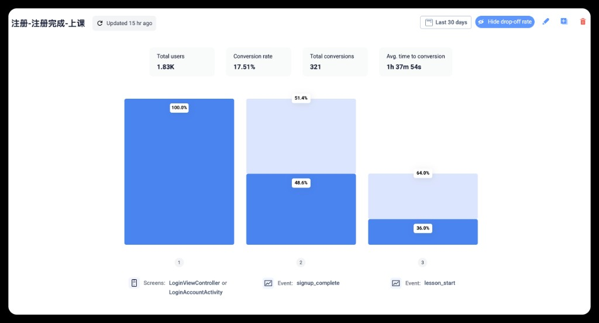
Sankey 显示启动后路径分散，且早期出现大额 Quit；LoginAccountActivity 后通往退出的流较粗，与漏斗、冻结/rage 数据三角互证。
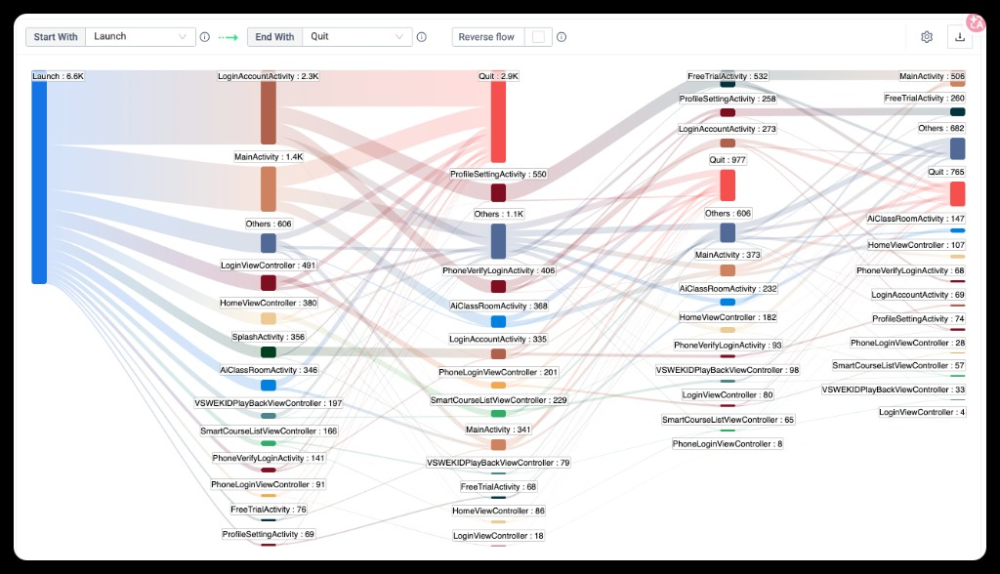
将「主课堂体验 + 登录首启 + Android 转化」列为同一阶段主线，数据侧补齐版本切片与样本门槛。